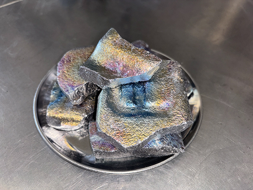
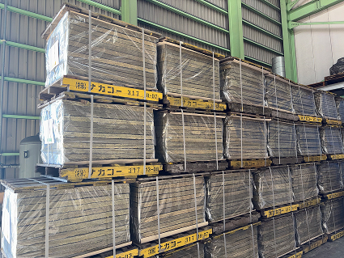

製鋼副資材は鉄の品質安定、歩留向上等の高炉メーカー様には欠かせない資材を製造販売しております。
安定した品質・コストに取り組み、またお客様の新たなニーズに対応すべく幅広いネットワークを持ちながら、日々努力をしております。


取扱商品一覧
| 溶鋼用保温剤（パウダー） | 保温作用・再酸化防止・潤滑作用・介在物の吸収・抜熱制御 |
|---|---|
| 鋼塊用保温剤（造粒品・パウダー） | 保温作用・断熱作用・酸化防止・介在物吸収 |
| 鋼塊用保温板 | 押湯の保温・凝固遅延・引け巣防止・歩留まりの改善 |
| フォーミング抑制剤 | フォーミング現象の鎮静化 |
| 脱酸剤 | 酸素除去・品質低下防止 |
| 溶鋼用添加剤 | スラグ改質・精錬・脱酸・保温 |
| 炉底補修材 | 溶鉄容器（炉）の底の修復・保護するために用いられる耐火材 |
| スラグ除去材 | 不純物の凝集・分離・粘度調整・スラグの浮上促進 |
| その他 |
株式会社ナカコー 高砂工場
〒676-0008
兵庫県高砂市荒井町新浜2-17-10
- callTEL
- 079-443-9378
- faxFAX
- 079-443-9388